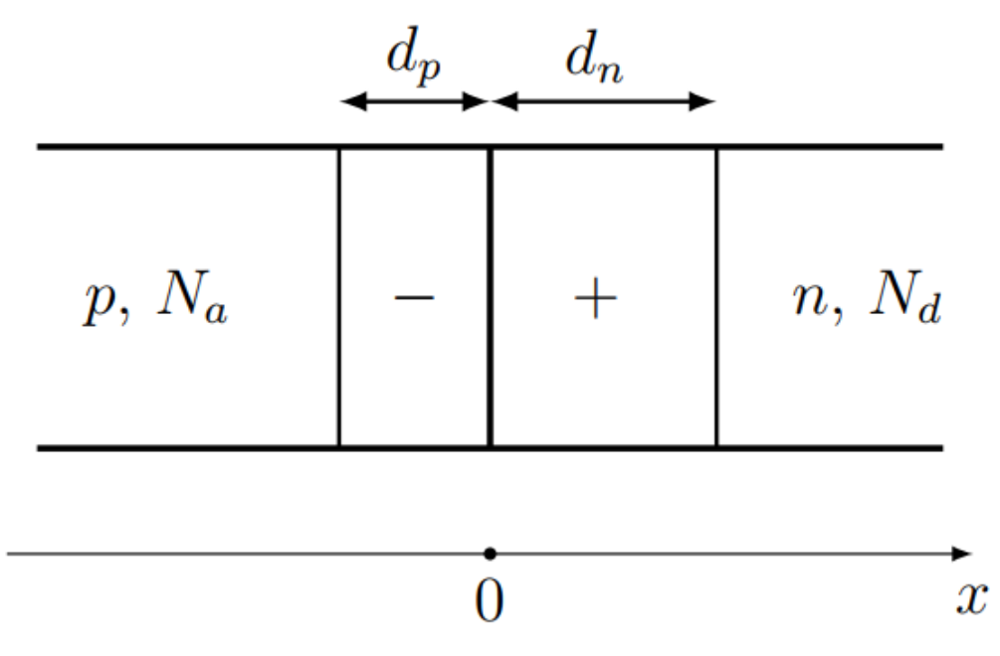
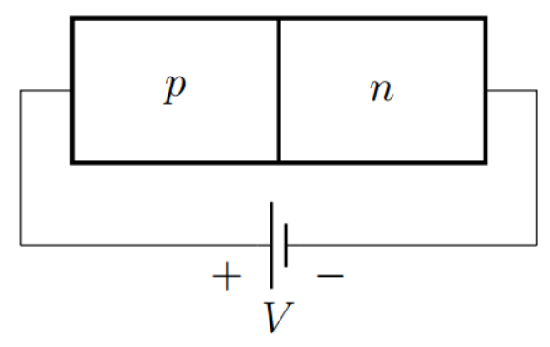
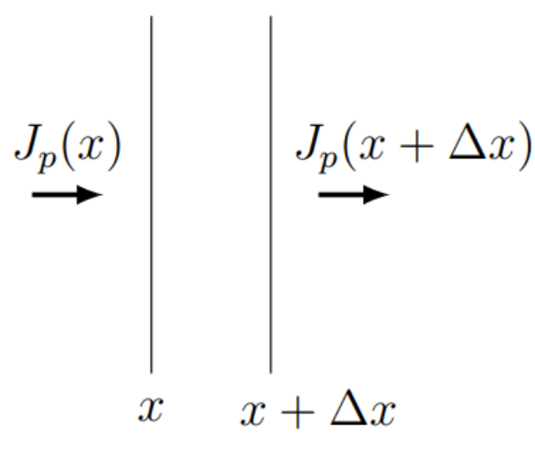

반도체는 전기 전도도가 금속보다 현저히 낮은 물질이다. 절연체와 달리 반도체의 전도도는 0이 아니며 온도에 따라 빠르게 증가한다. 이 사실은 열적 들뜸으로 인한 전하 운반자 농도의 증가로 설명할 수 있다.
반도체에는 두 종류의 전하 운반자, 즉 전자와 정공(hole)이 있다. 정공은 전자가 없는 자리에 나타나는 양으로 하전된 입자이다. 정공의 전하는 전자 전하의 절댓값과 같다. 순수 반도체에서 전자와 정공의 농도는 서로 같다.
반도체 소자, 특히 다이오드와 트랜지스터는 현대 전자공학에서 널리 사용된다. 이 문제에서는 반도체 다이오드의 가장 단순한 모형 중 하나를 살펴본다.
반도체의 전하 운반자 농도는 소량의 불순물, 즉 다른 화학 원소의 원자를 첨가하여 쉽게 바꿀 수 있다. 전자 농도를 증가시키는 불순물을 도너(donor)라 하고, 도너가 과잉인 반도체를 $n$형(negative에서 유래) 반도체라 한다. $n$형 반도체에서 정공 농도는 전자 농도보다 훨씬 낮다. 정공 농도를 증가시키는 불순물을 억셉터(acceptor)라 하고, 억셉터가 과잉인 반도체를 $p$형(positive에서 유래) 반도체라 한다.
$p$형과 $n$형 두 반도체의 접촉($pn$ 접합)을 생각하자. 실제로는 반도체의 서로 다른 부분을 서로 다른 종류의 불순물로 도핑할 수 있다. 접합을 통과하는 전류는 인가 전압의 극성에 의존한다. 그 결과 구조가 반도체 다이오드이다.

그림 1. 접합과 공핍층
이 문제에서는 다음 다이오드 모형(그림 1)을 살펴본다.
모든 물리량은 하나의 좌표 $x$에만 의존한다.
영역 $x<0$은 불순물 농도 $N_a$인 $p$형 반도체이다.
영역 $x>0$은 불순물 농도 $N_d$인 $n$형 반도체이다.
접합 근처에서 전자와 정공이 경계를 통해 확산한다. 그 결과 영역 $x<0$에는 너비 $d_p$인 음으로 하전된 층이, 영역 $x>0$에는 너비 $d_n$인 양으로 하전된 층이 생긴다. 이 층들을 공핍층(depletion layer)이라 한다.
공핍층에서는 주된 전하 운반자 농도($p$형 반도체에서는 정공, $n$형 반도체에서는 전자)가 거의 0이고, 층 바깥에서는 그 농도가 일정하며 불순물 농도와 같다.
공핍층의 부피 전하 밀도는 각 도너 불순물이 전하 $+q_e$를, 각 억셉터 불순물이 전하 $-q_e$를 가진다는 가정으로 계산할 수 있다. 여기서 $q_e$는 전자 전하의 절댓값이다.
다음 물리 상수를 사용할 수 있다
$\varepsilon_0 = 8.85\cdot 10^{-12}~\mathrm{F/m}$ – 전기 상수;
$q_e = 1.60\cdot 10^{-19}~\mathrm{C}$ – 전자 전하의 절댓값;
사실 퍼텐셜 차이는 물질의 성질과 온도로 결정된다. 퍼텐셜 차이를 알면 공핍층 너비를 계산할 수 있다. 너비 $d_n$, $d_p$를 $\Delta\varphi$, $N_a$, $N_d$, $\varepsilon$, $\varepsilon_0$, $q_e$로 나타내라. $\Delta\varphi = 0.8~\mathrm{V}$에 대해 수치를 계산하라.
여기서 $U_n(x)$, $U_p(x)$는 해당 점에서 전자 또는 정공의 위치 에너지, $T$는 절대 온도, $n_0$, $p_0$은 각각 불순물 농도 $N_d$와 $N_a$로 결정되는 정규화 상수이다. 접합의 오른쪽과 왼쪽에서 전자와 정공의 농도 비는 에너지 차이로 결정된다:
인가 전압 $V>0$이면 정공은 $p$형 반도체에서 $n$형으로, 전자는 $n$형 반도체에서 $p$형으로 이동한다. 또한 $n$형 반도체에서 전자 농도는 불순물 농도로 결정되어 변하지 않고, 정공 농도는 증가한다. 마찬가지로 $p$형 반도체에서 정공 농도는 변하지 않고 전자 농도가 증가한다.

그림 2. $pn$ 접합에 가해진 전압
B.1
외부 전압이 없을 때 $p$형 반도체에서 전자 농도를 $n_{10}$, $n$형 반도체에서 정공 농도를 $p_{10}$이라 하자. 전압 $V$를 가한 뒤 $p$형 반도체에서 전자 농도 $n_1$과 $n$형 반도체에서 정공 농도 $p_1$을 구하라. 전기장이 0인 공핍층 바깥 영역을 생각한다. 답을 $p_{10}$, $n_{10}$, $V$, $T$, $k$, $q_e$로 나타내라.
0.5pt
전압을 가한 뒤 $n$형 반도체의 정공 농도와 $p$형 반도체의 전자 농도가 평형값과 달라짐을 알았다. 전자는 정공에 해당하는 빈 자리로 이동할 수 있다. 이 과정에서 전자와 정공은 사라진다(재결합). 볼츠만 분포는 재결합을 고려하지 않는다. 따라서 확산이 없으면 전하 운반자 농도는 평형값으로 변한다.
구체적으로 공핍층 바깥 $n$형 반도체의 정공을 생각하자. 정공 농도를 $p_1$, 확산이 없을 때의 평형 농도를 $p_{10}$이라 하자. 재결합으로 인한 농도 변화율은 다음과 같이 표현할 수 있다
여기서 $\tau_p$는 정공 재결합 시간이다. 확산으로 인한 정공 플럭스(단위 시간에 단위 넓이를 통과하는 정공 수)는 다음 식으로 기술된다
$$J_p = -D_p\frac{dp_1}{dx},$$
여기서 $D_p$는 정공 확산 계수이다.

그림 3. 정공 균형
B.2
좌표 $x$와 $x+\Delta x$인 평면 사이의 부피를 생각하자(그림 3). 이 부피에서 정공 농도가 변하지 않는다는 조건을 써라. 두 평면을 통과하는 정공 플럭스와 정공 재결합을 고려하라. $\Delta x\to 0$인 극한에서, 평형값으로부터의 농도 편차 $\Delta p = p_1 - p_{10}$에 대한 $x$의 함수로서의 미분 방정식을 구하라. 답에는 $D_p$와 $\tau_p$도 포함될 수 있다.
재결합으로 인해 정공 농도가 변하는 특성 길이는 공핍층 너비보다 훨씬 크다. 따라서 공핍층에서는 재결합을 무시할 수 있다. 접합을 통과하는 전류는 서로 독립인 전자 전류와 정공 전류의 합으로 계산할 수 있다. 정공 전류를 계산하려면 공핍층 경계 근처의 $n$형 반도체를 생각할 수 있는데, 거기서는 전류가 확산으로 결정되고 정공 농도는 볼츠만 분포로 계산할 수 있다. 전자 전류도 같은 방식으로 구할 수 있다.
B.4
영역 $x>d_n$(공핍층 바깥 $n$형 반도체)에서 정공 농도 $p_1(x)$를 좌표의 함수로 구하라. 답을 $p_{10}$, $V$, $T$, $L_p$, $d_n$, $k$, $q_e$로 나타내라.
0.8pt
B.5
공핍층 경계 $x=d_n$에서 정공 확산 전류 밀도 $j_p$를 구하라. 답을 $p_{10}$, $V$, $L_p$, $D_p$, $T$, $k$, $q_e$로 나타내라.
0.8pt
전자 전류 식은 정공 농도를 전자 농도 $n_{10}$으로, 확산 계수·재결합 시간·특성 길이를 전자에 대한 값 $D_n$, $\tau_n$, $L_n$으로 바꾸면 유사하게 얻을 수 있다. 평형 정공·전자 농도는 다음과 같이 주어진다